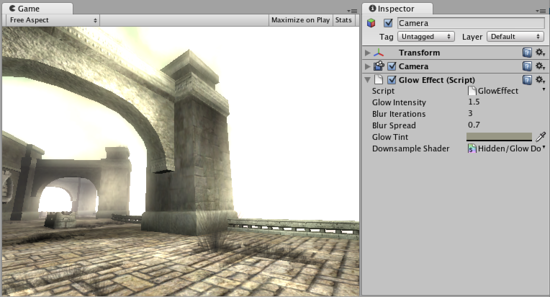

Thank you for helping us improve the quality of Unity Documentation. Although we cannot accept all submissions, we do read each suggested change from our users and will make updates where applicable.
For some reason your suggested change could not be submitted. Please try again in a few minutes. And thank you for taking the time to help us improve the quality of Unity Documentation.
The Glow image effect (sometimes called “Bloom”) can dramatically enhance the rendered image by making overbright parts “glow” (e.g. sun, light sources, strong highlights).
The Bloom image effect gives greater control over the glow but has a bit higher processing overhead.
As with the other image effects, this effect is only available in Unity Pro and you must have the Pro Standard Assets installed before it becomes available.

Glow effect applied to the scene
Properties
Property:
Function:
Glow Intensity
Total brightness at the brightest spots of the glowing areas.
Blur Iterations
Number of times the glow is blurred when being drawn. Each iteration requires processing time.
Blur Spread
The pixel distance over which pixels are combined to produce blurring.
Glow Tint
Color tint applied to the glow.
Downsample Shader
The shader used for the glow. You generally should not have to change this.
Details
Glow uses the alpha channel of the final image to represent “color brightness”. All colors are treated as RGB, multiplied by the alpha channel. You can view the contents of the alpha channel in Scene View.
All built-in shaders write the following information to alpha:
Main texture’s alpha multiplied by main color’s alpha (not affected by lighting).
Specular shaders add specular highlight multiplied by specular color’s alpha.
Transparent shaders do not modify alpha channel at all.
Particle shaders do not modify alpha channel, except for Particles/Multiply which darkens anything that is in alpha.
Skybox shaders write alpha of the texture multiplied by tint alpha
Most of the time you’ll want to do this to get reasonable glow:
Set material’s main color alpha to zero or use a texture with zero alpha channel. In the latter case, you can put non-zero alpha in the texture to cause these parts to glow.
Set the specular color alpha for Specular shaders to be 100%.
Keep in mind what alpha the camera clears to (if it clears to a solid color), or what alpha the skybox material uses.
Add the Glow image effect to the camera. Tweak Glow Intensity and Blur Iterations values, you can also take a look at the comments in the shader script source.
The alpha channel on the Skybox can be used to great effect to add more glow when looking at the sun
Tips:
Use the alpha rendering mode in the scene view toolbar to quickly see which objects output different values to the alpha channel.
Hardware Support
This effect requires a graphics card that supports Shader Model 2.
See the Graphics Hardware Capabilities and Emulation page for further details and a list of compliant hardware.